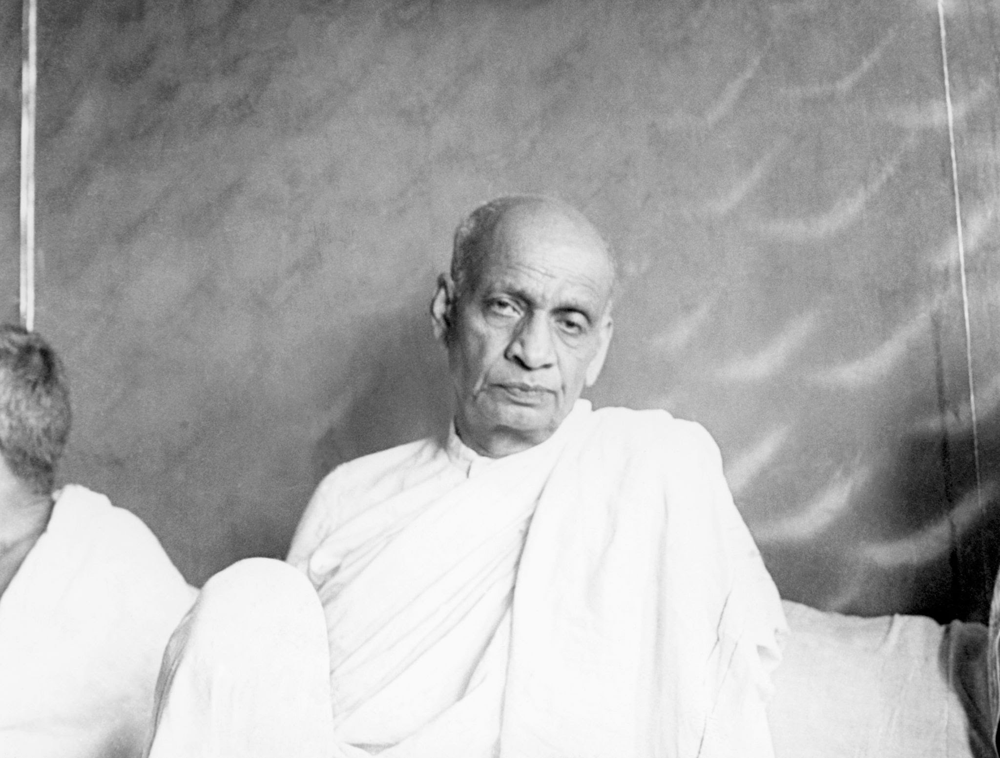
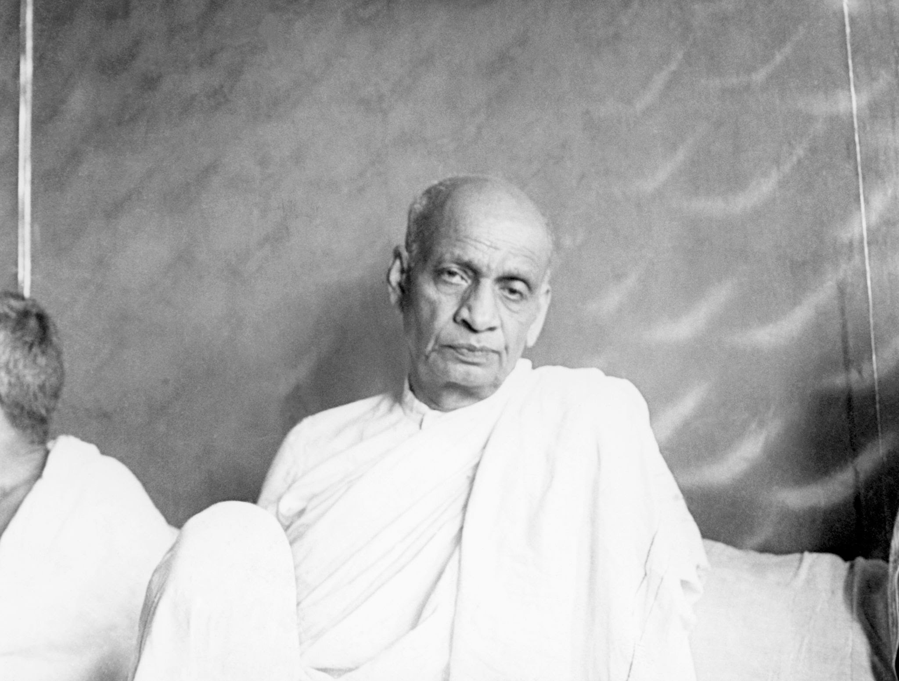

Sardar Vallabhbhai Patel was born in Nadiad, Gujarat, on October 31, 1875. He was born to a middle-class
family and had five siblings. His father’s name was Jhaverbhai Patel, and his mother’s was Ladba. He started
his early education at Karamsad and Petlad. Apart from the education he received from schools, he was mainly
self-taught. He was a voracious reader and learnt subjects by borrowing books from his friends. Patel was
married to Jhaverben Patel, when he was approximately sixteen to seventeen years old. He completed his
matriculation at the age of 22.
Sardar Vallabhbhai Patel had a very strong interest in law. After winning the district pleader’s
examination, he started practising law. In 1900, he started an independent district pleader office in
Godhra. After running it for two years, he moved to Borsad and Anand to continue his practice of law.
After his wife’s unexpected demise in 1909, Patel decided to leave for England to complete his studies in
law. He moved to London in August 1910 and enrolled at the Middle Temple. Patel enthusiastically completed
his education with great academic success and returned to India in 1913. After returning to India, Patel
settled in Ahmedabad and established himself as one of the successful barristers in India.
Sardar Patel wasn’t a strong political figure till 1917. Meeting Mahatma Gandhi in Godhra fundamentally
changed the ideology of Patel’s life and made him a true admirer of Gandhian principles. He realised the
power of ‘Ahimsa’ (non-violence) and believed it was the best political tool to win independence for India
from British rule. After his meeting with Gandhi, Patel decided to drop his high-earned job and devote
himself to the freedom movement of India. As an initial step, he changed his style and appearance and
started wearing white clothes made in India.
From 1917 onwards, Patel participated in numerous freedom movements. Patel marked his entrance into public
issues in 1918. He planned a mass campaign against the Bombay government with the participation of peasants,
farmers, and landowners of Kheda city in Gujarat. The movement was to fight for the exemption of taxes
because of the crop failures caused by heavy rains.
Later in 1920, he joined Gandhi’s Non-cooperation Movement, led the Satyagraha Movement in Nagpur in 1923,
conducted the Bardoli Satyagraha of 1928, Civil Disobedience Movement in 1930, Quit India Movement in 1942
etc. During the Bardoli Satyagraha, Vallabhbhai Patel won the title of ‘Sardar’, and his active
participation in the campaign made him popular throughout the nation. After 1947, for the first three years
of Indian independence, he served as the Deputy Prime Minister, Minister of Home Affairs, Minister of
Information, and Minister of States. Later in 1950, Sardar’s health deteriorated, and India lost one of the
finest freedom fighters on 15 December, 1950.
TRIBUTE TO OUR HERO!
 
